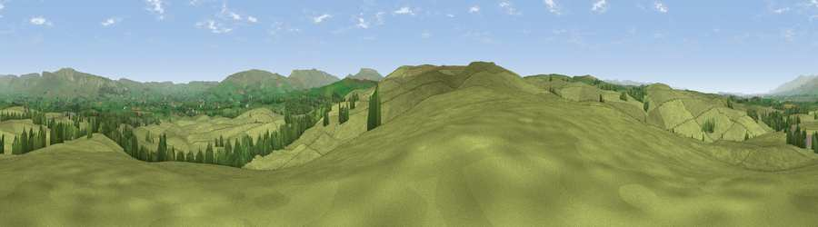

Viewpoint near Crosby Garrett
#12930 in England · top 44% of its area beats it · near Crosby GarrettThe view, rendered

A 360° render of this exact spot computed from the terrain model, tree cover and land cover — summer colours, afternoon light, calibrated against photographs of famous viewpoints. Real trees, hedges and buildings will differ in detail.
The panorama
Grey silhouette: terrain skyline in each direction (720 bearings, Earth curvature and refraction included). Dashed green: skyline with trees (+15 m) and buildings (+8 m) as obstacles. Blue strip: how far the ground is visible on each bearing.
Where the view opens
Wedge length = distance to the farthest visible ground on that bearing (vegetation-aware). Rings at 10, 25 and 50 km.
What fills the view
94% grassland · 5% woodland
Angular shares of the visible panorama (visual magnitude), not map area. Landscape diversity 0.11 (0–1 Shannon).
Key numbers
More beautiful places nearby
The staircase of upgrades: each row has a higher view potential than everything closer. Driving times are estimates from straight-line distance, calibrated against real road routing — check an actual route before setting out.
| Place | Direction | Drive | Score |
|---|---|---|---|
| Viewpoint near Great Asby | WNW · 2 km | ~6 min | 60.6 |
| Viewpoint near Crosby Garrett | S · 2 km | ~6 min | 69.3 |
| Viewpoint near Brough | NE · 9 km | ~18 min | 72.7 |
| Green Bell | SSW · 10 km | ~19 min | 75.2 |
| Randygill Top | SSW · 11 km | ~21 min | 76.0 |
| Viewpoint c9983_7527 | SSE · 12 km | ~23 min | 76.3 |
| Viewpoint c10024_7603 | SE · 12 km | ~23 min | 76.9 |
| Fell Head | SSW · 14 km | ~26 min | 78.8 |
54.48883, -2.43412 · source: screening · position refined by local search. Computed location — check access rights before visiting.